Speak naturally
Voice becomes structured actions.
Record a thought naturally. Yormio can turn it into one or multiple reminders and lists for review.
Turn natural voice or pasted text into reminders, checklists and organized plans — without slowing down to type everything yourself.
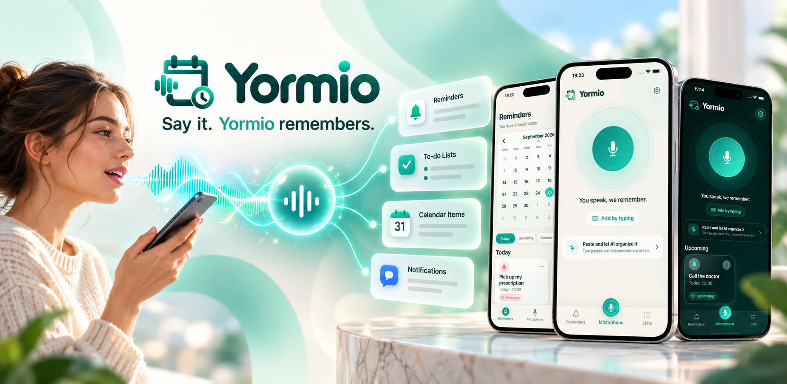
Yormio is built around the moment an idea appears — before it disappears.
Record a thought naturally. Yormio can turn it into one or multiple reminders and lists for review.
Paste text and let Yormio identify actionable reminders and checklist items instead of retyping them.
Create clean checklists, track progress and keep one-off schedules close to the list they belong to.
Browse scheduled reminders and planned lists by date so upcoming actions stay visible.
Yormio keeps capture lightweight, then gives you a chance to review before anything becomes part of your plan.
Speak, type or paste.
Check the extracted actions.
Let reminders, lists and calendar views do the rest.
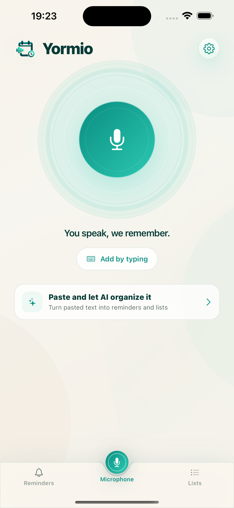
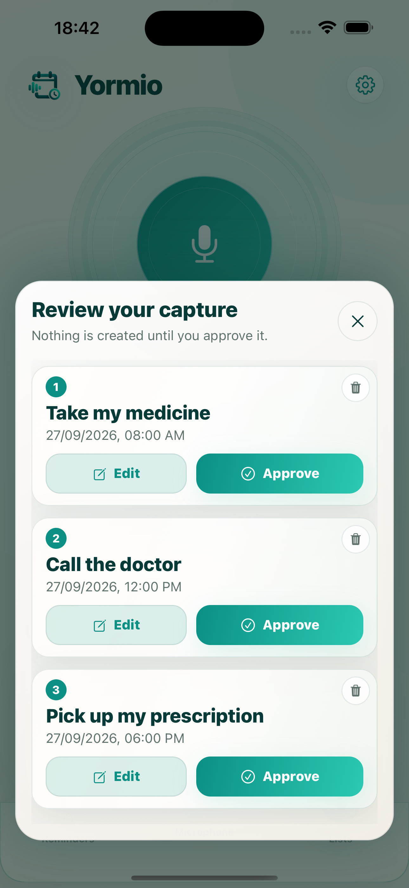
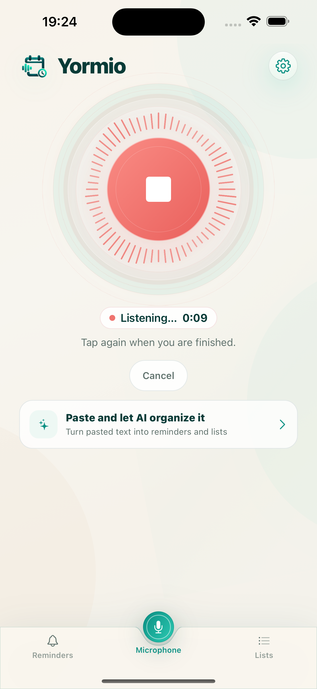
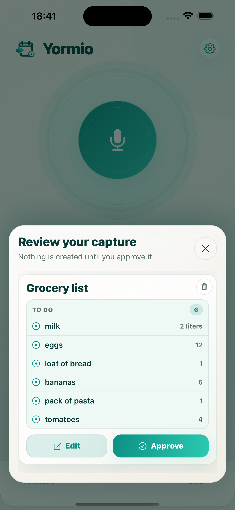
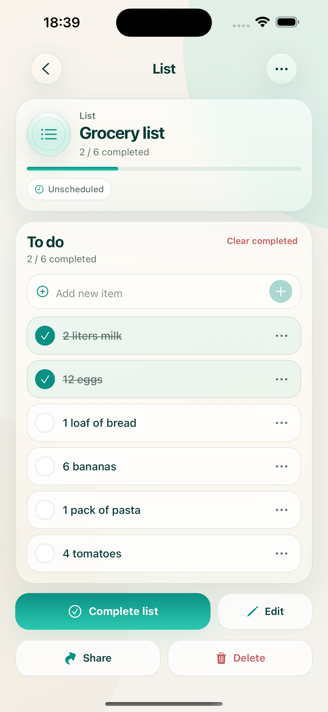
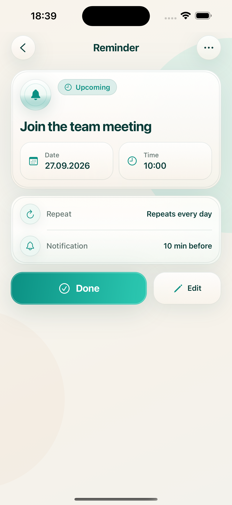
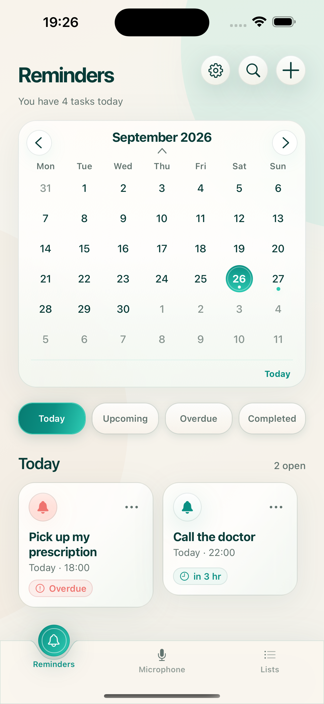
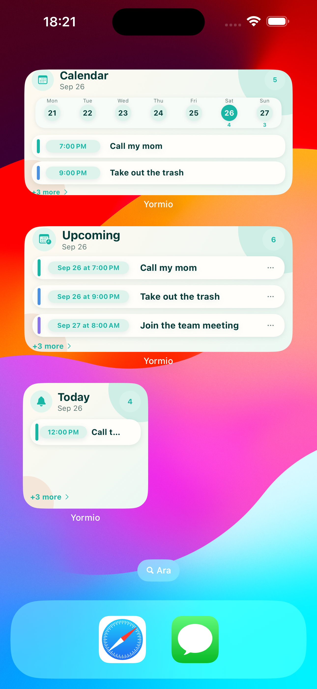
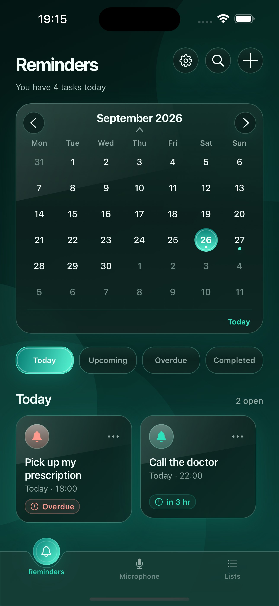
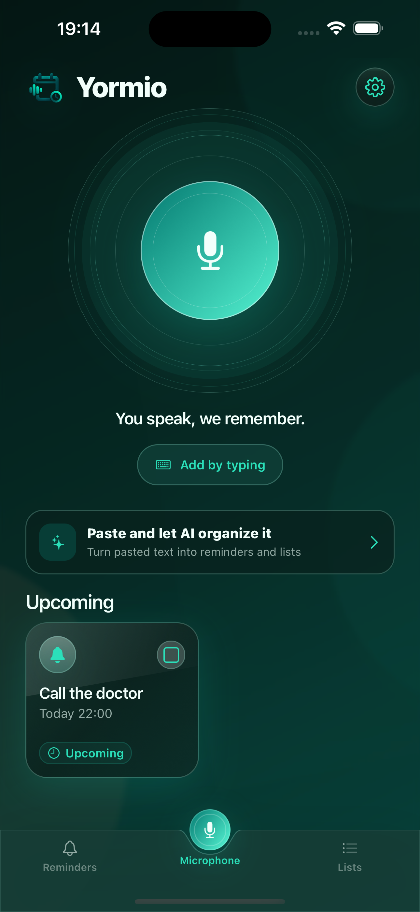
Review Yormio's privacy information, terms, support options and account-deletion instructions whenever you need them.
Yormio helps turn the things you say and paste into actions you can actually come back to.